🗺️ Ore-path map
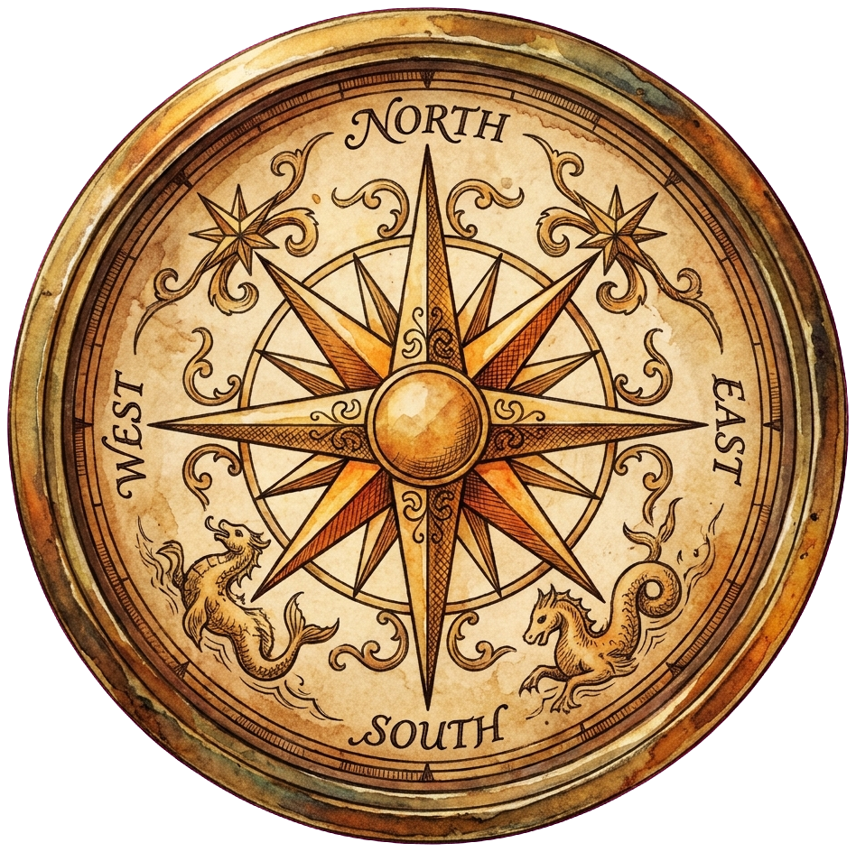
⚔
🔥
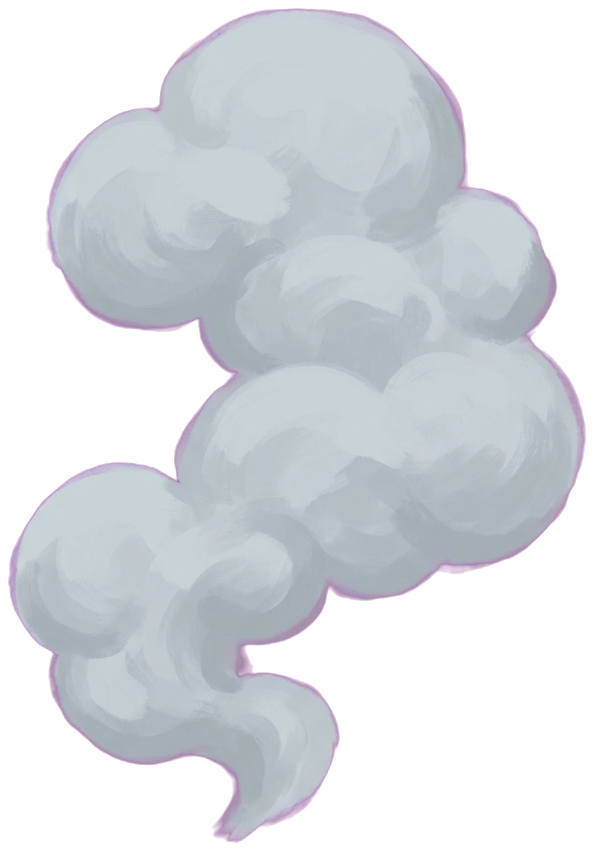
3
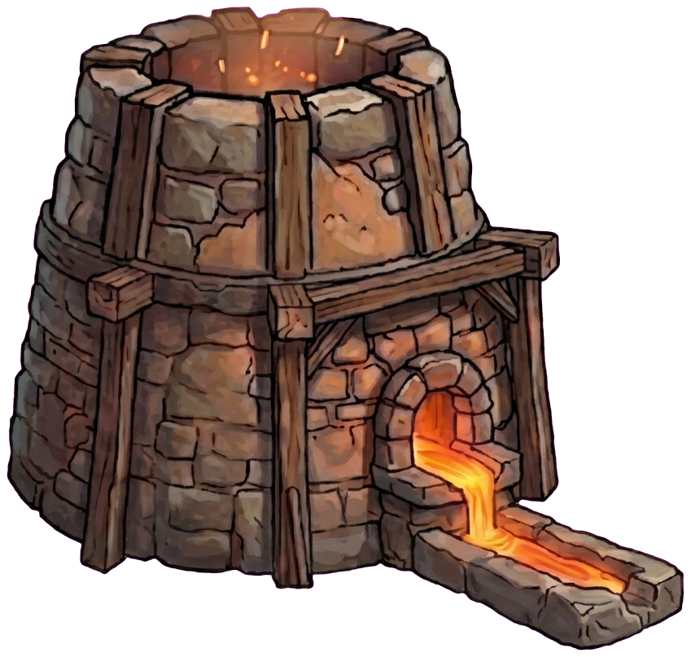
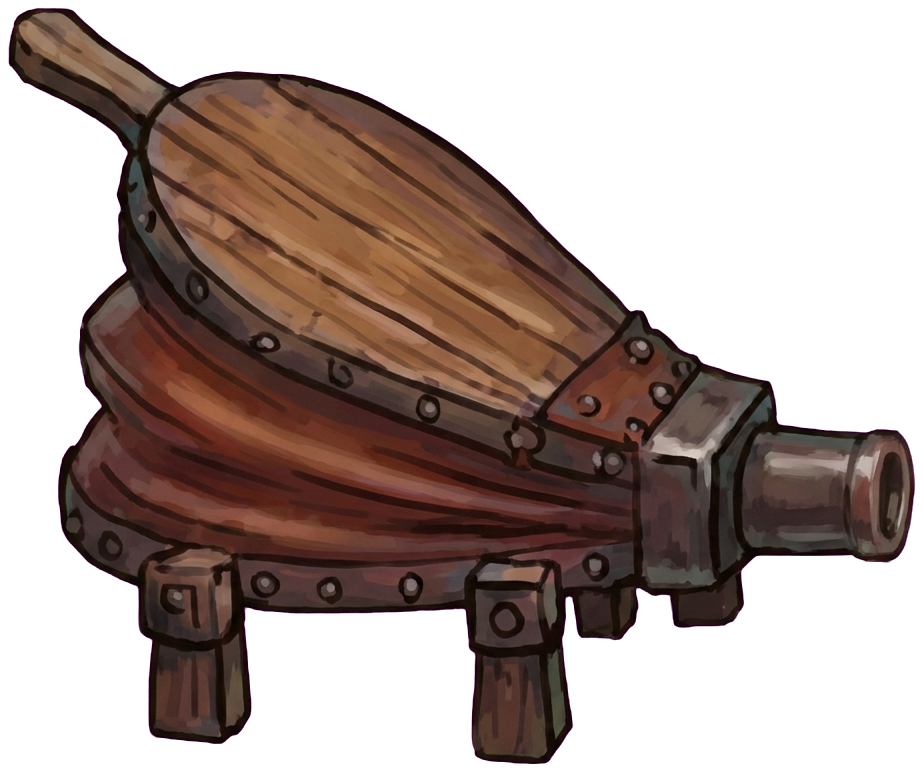
Bellow Smelt · furnace
2
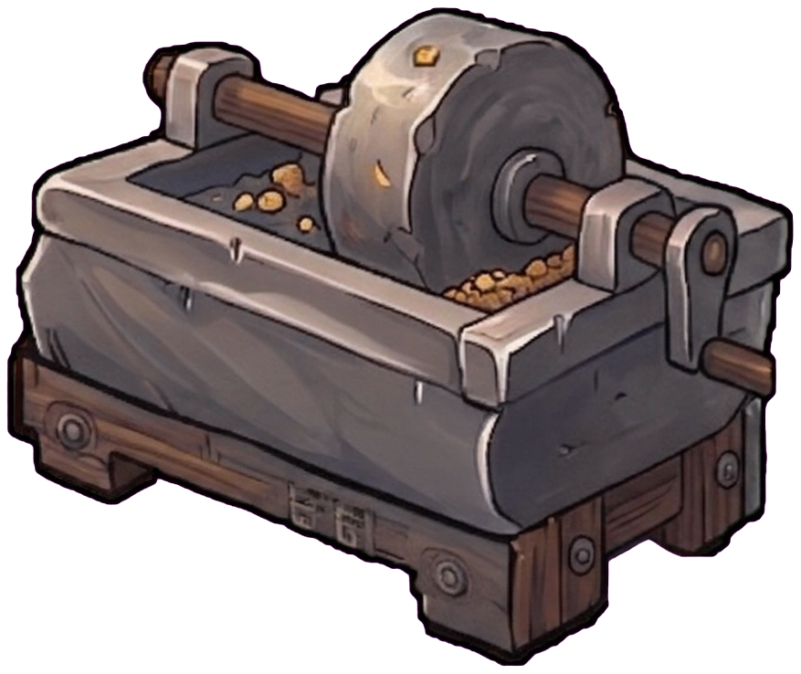
Grind · wheel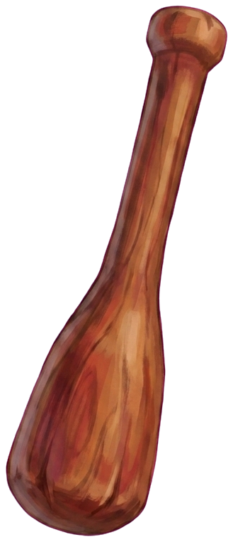
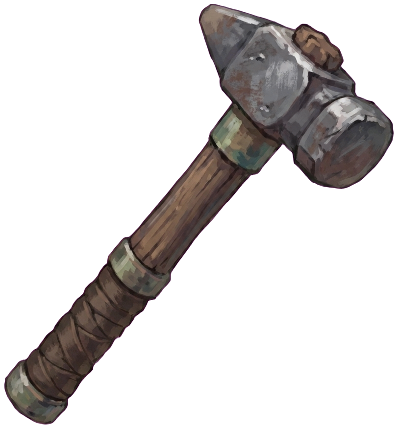
4
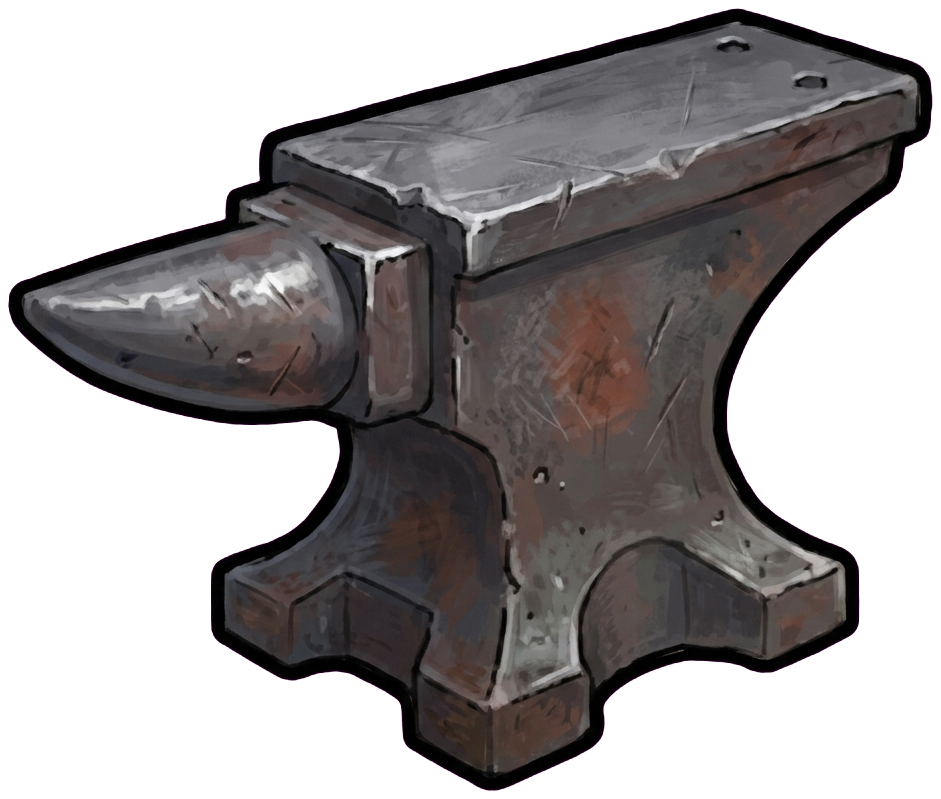
Hammer · anvil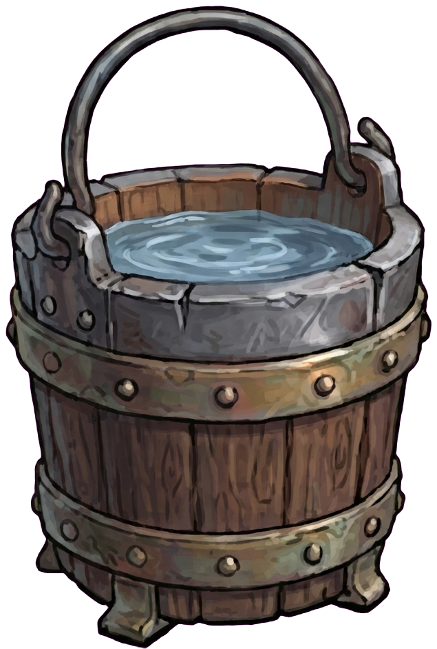
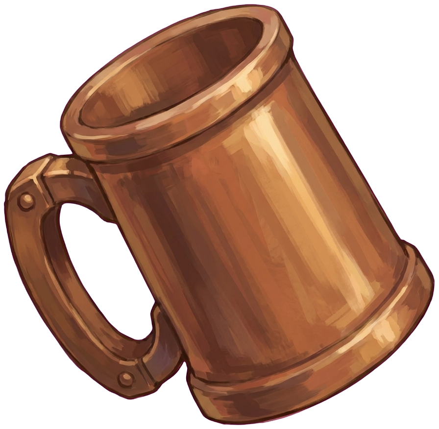
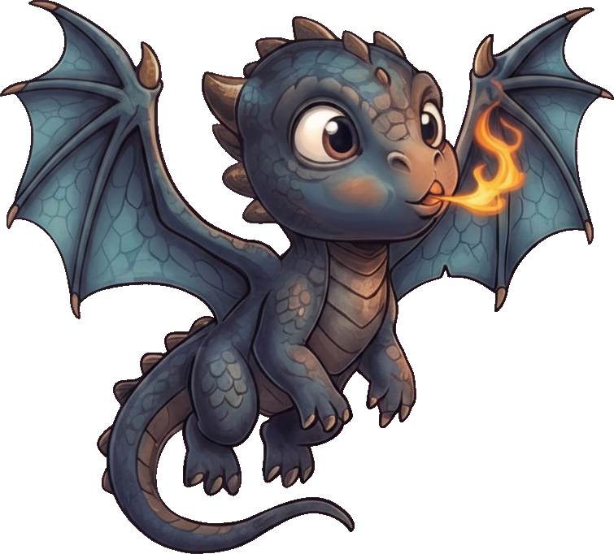
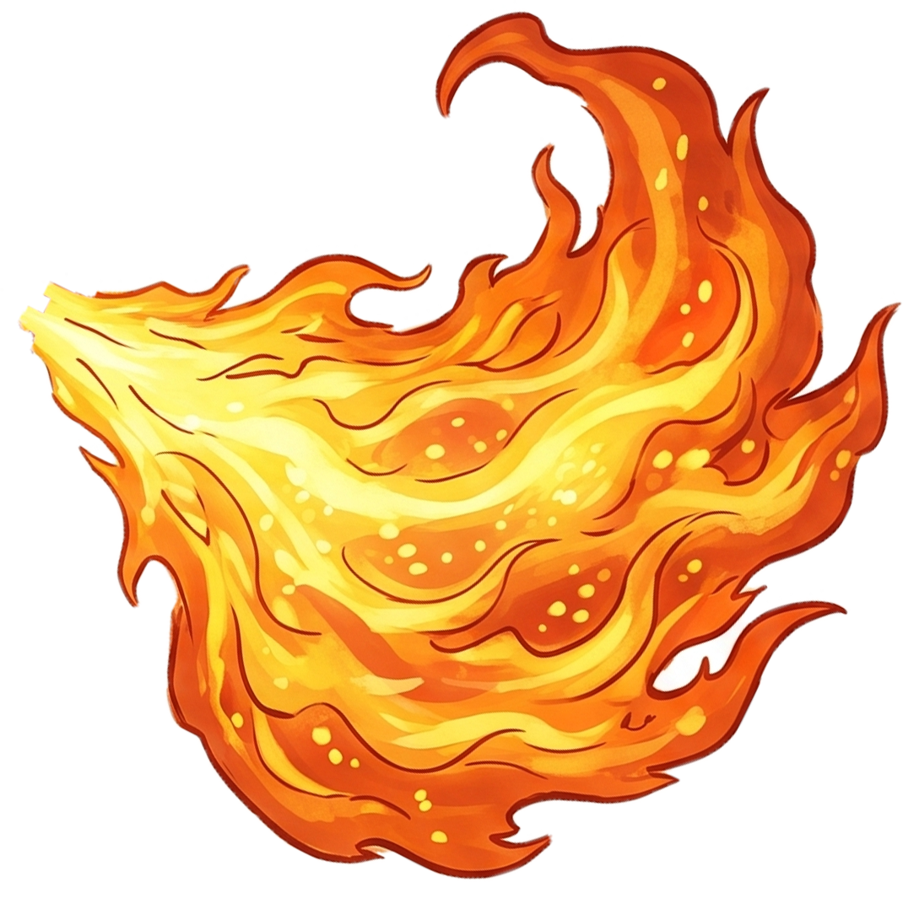
4DAY
🪙246
⭐9/15
📖0XP
✦
◆ MATERIALS ◆
1
Ores
Choose a Blade Shape
Pick the shape, then hammer it into form.
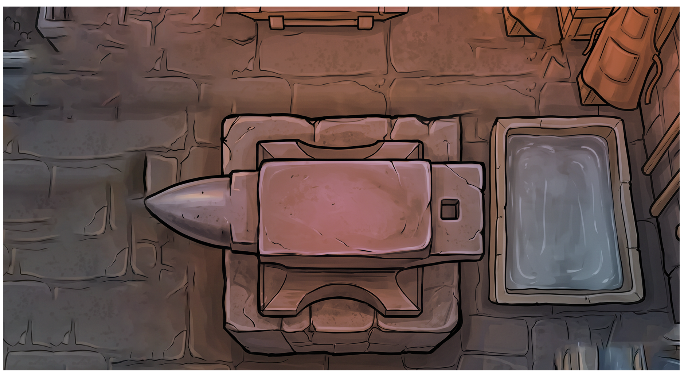
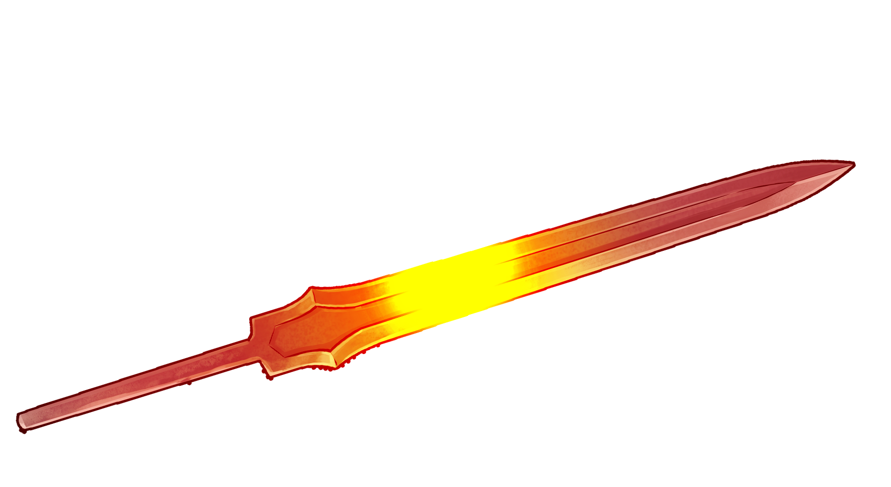
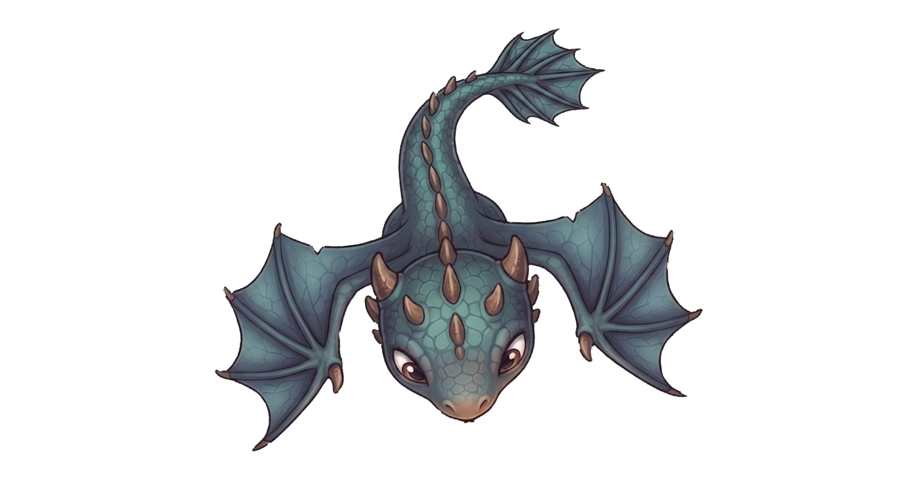
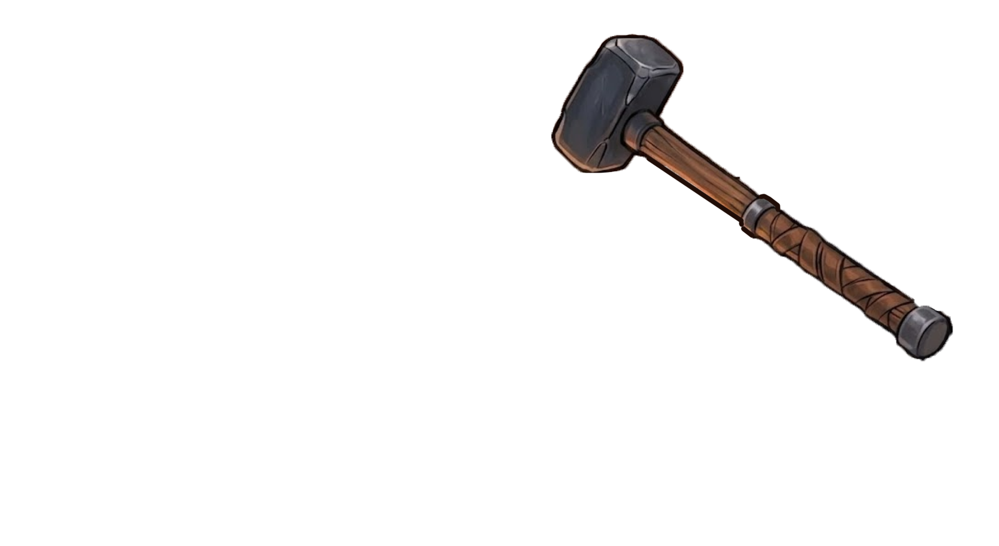
Hammer the Blade
Trait Acquired!
continue ›